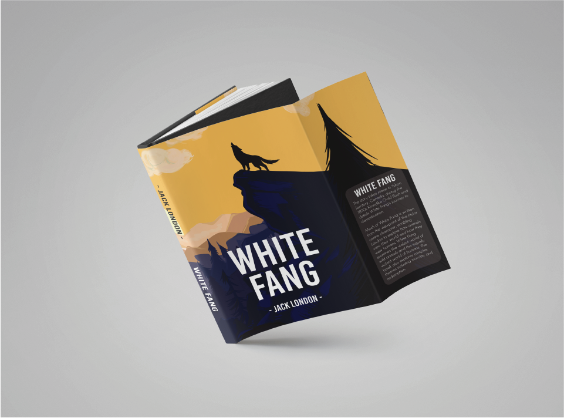
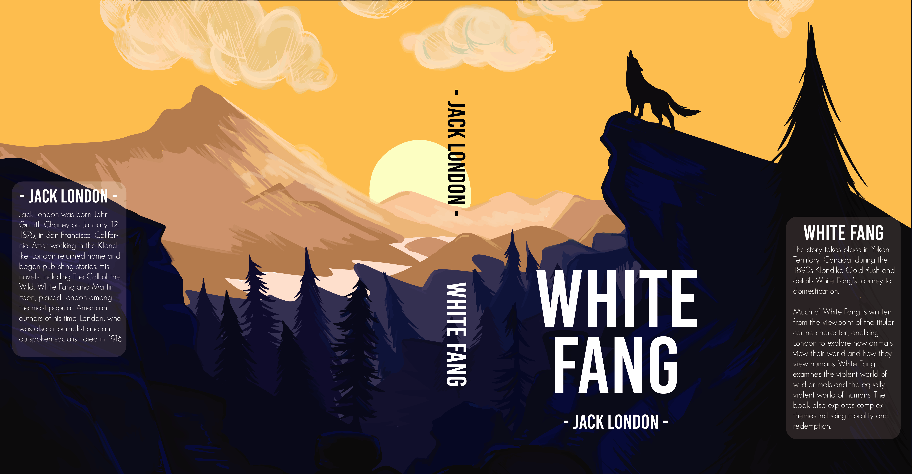
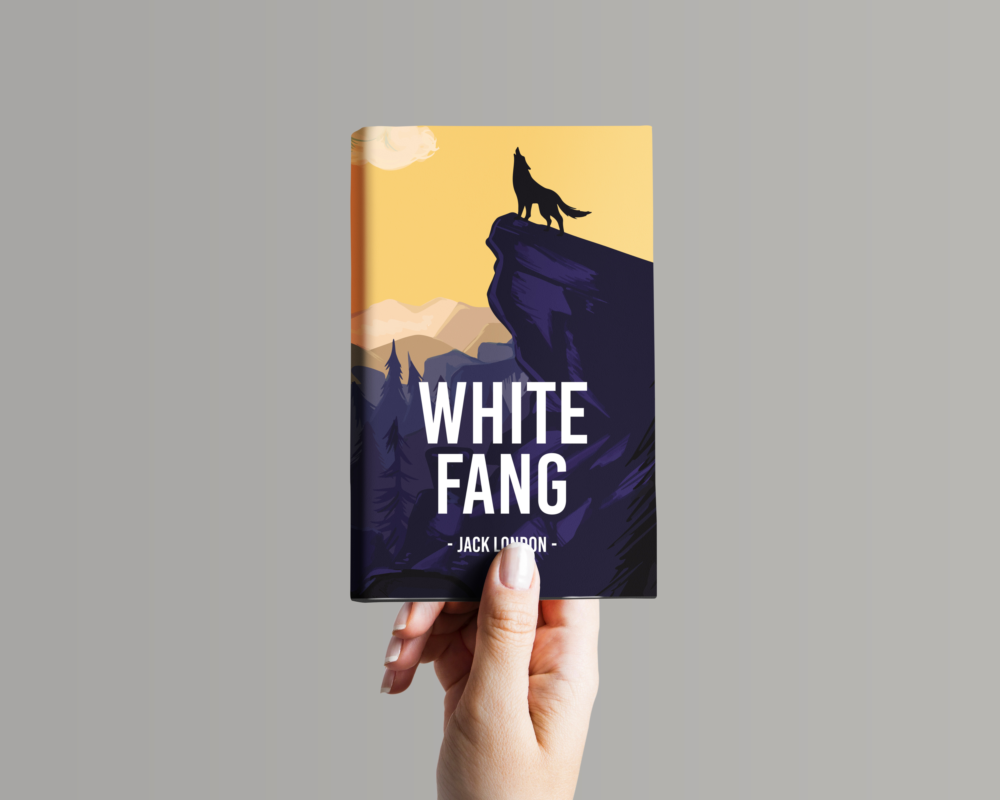

Project Objective
For this project I was required to design a modern book cover for White Fang, a novel by American author Jack London that tells the story of a wolf dog that is rescued from its brutal owner and gradually becomes domesticated through the patience and kindness of its new owner.
Concept
The novel is a journey seen through a wolf dog’s eyes, where we see him fighting against his own nature, having to choose between surviving as a lone wolf or trusting humans as a dog. I wanted the book cover to reflect the final portion of the book and create a visual metaphor of the “one last goodbye” to his wild side, this is further emphasized by the sunset seen in the background which gives the scene a melancholic feeling to the conclusion of his journey.
Outcome
The creation process was extremely straightforward, being already familiar with the novel I wanted to illustrate a key moment without unraveling the true nature of the story. The result is a colorful illustration that gets a deeper meaning once you’ve read the novel. I also made sure to choose a modern and easily readable font, as the story was primarily targeted at juvenile audiences.
